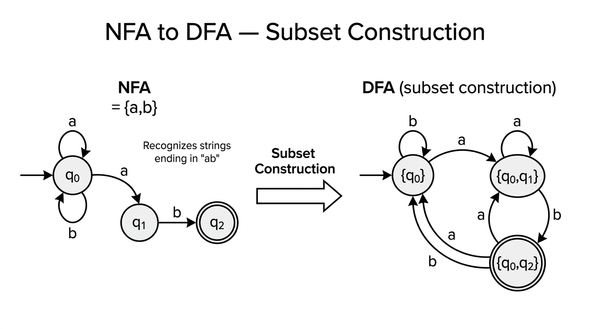

NFAs & DFA Equivalence — COMP0003 Automata¶
Lecture-style notes. A nondeterministic finite automaton (NFA) relaxes the DFA model by allowing ε-transitions, multiple transitions on the same symbol, and missing transitions — yet NFAs recognise exactly the same class of languages as DFAs. The subset (powerset) construction that converts any NFA to an equivalent DFA is one of the most important algorithms in the theory of computation.
1. COMPLETE TOPIC SUMMARIES¶
NFAs — convenience features over DFAs¶
A nondeterministic finite automaton is like a DFA with three relaxations:
- ε-transitions: the machine may change state without consuming any input symbol.
- Multiple arrows on the same symbol: from a single state, reading one symbol may lead to several different states simultaneously.
- Missing arrows: a state need not have a transition for every symbol in \(\Sigma\). If no arrow exists, that branch of computation simply dies (no crash — the branch is silently abandoned).
These features make NFAs much easier to design for many languages, while — as we prove below — adding no extra recognition power over DFAs.
Example 1 — optional "baba" prefix + even number of b's¶
Language. \(\Sigma = \{a, b\}\). Accept strings that optionally begin with "baba" and then contain an even number of b's (in the remainder).
NFA idea. Use an ε-transition from the start state to branch:
- One path reads the prefix "baba" (states \(q_0 \to q_1 \to q_2 \to q_3 \to q_4\) on inputs \(b, a, b, a\)) and then ε-transitions into the "even-b" counter.
- The other path goes directly (via ε) to the "even-b" counter (two states toggling on b, self-looping on a).
The ε-arrow lets the machine choose without seeing any input whether the prefix is present — nondeterminism handles both cases at once.
Example 2 — substring "hello" detection¶
Language. \(\Sigma = \{A, \ldots, Z, a, \ldots, z, 0, \ldots, 9\}\). Accept any string containing "hello" as a substring.
NFA idea. A start state \(q_0\) has a self-loop on every symbol in \(\Sigma\) and an arrow on h to \(q_1\). Then a deterministic chain: \(q_1 \xrightarrow{e} q_2 \xrightarrow{l} q_3 \xrightarrow{l} q_4 \xrightarrow{o} q_5\), with \(q_5\) accepting and self-looping on every symbol.
This is not a valid DFA because \(q_0\) has two transitions on h (the self-loop and the arrow to \(q_1\)). As an NFA it works perfectly: the machine nondeterministically "guesses" when the substring begins. No backtracking is needed.
Nondeterminism — two equivalent intuitions¶
- Parallel-paths view: the machine explores all possible branches simultaneously; it accepts if any branch reaches an accept state.
- "Somehow knows" view: at each nondeterministic choice, the machine magically picks the right option — it accepts if there exists a sequence of choices that leads to acceptance.
Both views are equivalent. Neither requires physically trying all paths one by one; the definition of acceptance handles it existentially.
Formal definition of an NFA¶
An NFA is a 5-tuple \(N = (Q,\; \Sigma,\; \delta,\; q_0,\; F)\), where:
| Component | Meaning |
|---|---|
| \(Q\) | Finite set of states |
| \(\Sigma\) | Finite alphabet (input symbols) |
| \(\delta : Q \times \Sigma_\varepsilon \to \mathcal{P}(Q)\) | Transition function — returns a set of states |
| \(q_0 \in Q\) | Start state |
| \(F \subseteq Q\) | Set of accept (final) states |
Here \(\Sigma_\varepsilon = \Sigma \cup \{\varepsilon\}\), and \(\mathcal{P}(Q)\) is the power set of \(Q\) (the set of all subsets of \(Q\)).
Key difference from a DFA: the DFA transition function is \(\delta : Q \times \Sigma \to Q\) (exactly one next state, no ε). The NFA transition function maps to a subset of \(Q\) and also accepts ε as input.
NFA acceptance¶
NFA \(N = (Q, \Sigma, \delta, q_0, F)\) accepts input string \(w = w_1 w_2 \cdots w_n\) (where each \(w_i \in \Sigma_\varepsilon\)) if there exists a sequence of states \(r_0, r_1, \ldots, r_n\) such that:
- \(r_0 = q_0\) — start in the start state.
- \(r_{i+1} \in \delta(r_i,\; w_{i+1})\) for \(i = 0, \ldots, n-1\) — each transition is valid.
- \(r_n \in F\) — end in an accept state.
The word "exists" is critical: it suffices that one valid path through the NFA leads to acceptance. Other paths may die or reject — that does not matter.
Note on ε in strings: the strings \(abb\), \(\varepsilon abb\), and \(a\varepsilon b\varepsilon b\varepsilon\varepsilon\) all represent the same input because ε contributes nothing.
Equivalent power of NFAs and DFAs¶
Theorem. A language \(L\) is recognised by some NFA if and only if \(L\) is recognised by some DFA.
The proof has two directions:
| Direction | Difficulty | Idea |
|---|---|---|
| DFA → NFA | Trivial | Every DFA is already a valid NFA (syntactically) |
| NFA → DFA | Non-trivial | Subset / powerset construction |
DFA → NFA (the easy direction)¶
Given a DFA \(M = (Q, \Sigma, \delta, q_0, F)\), define NFA \(N = (Q, \Sigma, \delta', q_0, F)\) where:
[ \delta'(q, a) = {\delta(q, a)} \quad \text{for each } q \in Q,\; a \in \Sigma ] [ \delta'(q, \varepsilon) = \emptyset \quad \text{for each } q \in Q ]
That is, wrap each DFA output in a singleton set and add empty ε-transitions. The resulting NFA accepts exactly the same language.
NFA → DFA conversion (subset / powerset construction)¶

{kind=link}
This is the core construction. Given NFA \(N = (Q, \Sigma, \delta, q_0, F)\), we build an equivalent DFA \(M' = (Q', \Sigma, \delta', q_0', F')\).
ε-closure¶
For a set of NFA states \(S \subseteq Q\), the ε-closure is:
Computed by repeatedly expanding: start with \(E(S) = S\), then add any state reachable via ε from a state already in \(E(S)\), until no new states appear (fixed point).
Construction¶
| DFA component | Definition |
|---|---|
| \(Q' = \mathcal{P}(Q)\) | Each DFA state is a subset of NFA states |
| \(\Sigma' = \Sigma\) | Alphabet unchanged |
| \(q_0' = E(\{q_0\})\) | Start state is the ε-closure of the NFA start state |
| \(F' = \{R \in Q' \mid R \cap F \neq \emptyset\}\) | Accept if the subset contains any NFA accept state |
| \(\delta'(R, a) = \displaystyle\bigcup_{r \in R} E\big(\delta(r, a)\big)\) | For each NFA state in the current set, follow a, then take ε-closure; union the results |
Equivalently:
Why it works¶
The DFA state \(R \subseteq Q\) tracks exactly which NFA states the NFA could be in after reading the input so far. On each new symbol a, we update \(R\) to all states reachable from \(R\) via a and then any number of ε-transitions. The DFA accepts iff \(R\) contains an NFA accept state — matching the NFA's existential acceptance condition.
Size blow-up¶
\(|Q'| = |\mathcal{P}(Q)| = 2^{|Q|}\). In the worst case the DFA can be exponentially larger than the NFA. In practice, many subsets are unreachable and can be pruned; the lazy construction only builds reachable states.
Worked example — step-by-step NFA → DFA conversion¶
Consider the NFA for "optionally starts with baba, then even number of b's" with states \(\{q_0, q_1, q_2, q_3, q_4, q_5\}\):
- \(q_0\) is the start state, with ε-transitions to both \(q_1\) (prefix path) and \(q_4\) (skip-prefix path).
- \(q_1 \xrightarrow{b} q_2 \xrightarrow{a} q_3 \xrightarrow{b} q_4'\xrightarrow{a} q_4\) reads "baba" then ε to \(q_4\).
- \(q_4\) (even-b, accept) loops on a, goes to \(q_5\) on b.
- \(q_5\) (odd-b) loops on a, goes to \(q_4\) on b.
Step 1 — Start state. Compute \(E(\{q_0\})\). From \(q_0\), ε-transitions reach \(q_1\) and \(q_4\). So \(q_0' = \{q_0, q_1, q_4\}\). This set contains \(q_4 \in F\), so it is an accept state.
Step 2 — Transitions from \(\{q_0, q_1, q_4\}\).
- On a: \(\delta(q_0, a) = \emptyset\), \(\delta(q_1, a) = \emptyset\), \(\delta(q_4, a) = \{q_4\}\). Union: \(\{q_4\}\). ε-closure: \(E(\{q_4\}) = \{q_4\}\). New DFA state: \(\{q_4\}\) (accept).
- On b: \(\delta(q_0, b) = \emptyset\), \(\delta(q_1, b) = \{q_2\}\), \(\delta(q_4, b) = \{q_5\}\). Union: \(\{q_2, q_5\}\). ε-closure: \(E(\{q_2, q_5\}) = \{q_2, q_5\}\). New DFA state: \(\{q_2, q_5\}\) (not accept).
Step 3 — Transitions from \(\{q_4\}\).
- On a: \(\{q_4\}\) (accept, self-loop).
- On b: \(\{q_5\}\) (not accept).
Step 4 — Transitions from \(\{q_2, q_5\}\).
- On a: \(\delta(q_2, a) = \{q_3\}\), \(\delta(q_5, a) = \{q_5\}\). Result: \(E(\{q_3, q_5\}) = \{q_3, q_5\}\) (not accept).
- On b: \(\delta(q_2, b) = \emptyset\), \(\delta(q_5, b) = \{q_4\}\). Result: \(E(\{q_4\}) = \{q_4\}\) (accept, already seen).
Continue until all reachable DFA states have complete transition tables. The result is a valid DFA that accepts exactly the same language as the original NFA. Unreachable subsets of \(\mathcal{P}(Q)\) are never generated.
2. EXAM-STYLE QUESTIONS (WITH MODEL ANSWERS)¶
Q1 — NFA formal definition¶
Question. Write down the formal definition of an NFA. Explain precisely how the transition function \(\delta\) differs from that of a DFA, and state what \(\Sigma_\varepsilon\) means.
Model answer. An NFA is a 5-tuple \((Q, \Sigma, \delta, q_0, F)\) where \(Q\) is a finite set of states, \(\Sigma\) is a finite alphabet, \(q_0 \in Q\) is the start state, \(F \subseteq Q\) is the set of accept states, and \(\delta : Q \times \Sigma_\varepsilon \to \mathcal{P}(Q)\) is the transition function. Here \(\Sigma_\varepsilon = \Sigma \cup \{\varepsilon\}\), so \(\delta\) also takes the empty string as input. Unlike a DFA's \(\delta : Q \times \Sigma \to Q\), which returns a single state and is defined for every symbol, the NFA's \(\delta\) returns a set of states (possibly empty), allowing nondeterministic branching and ε-moves.
Q2 — Tracing NFA execution¶
Question. Consider an NFA over \(\Sigma = \{0, 1\}\) with states \(\{q_0, q_1, q_2\}\), start state \(q_0\), accept state \(q_2\), and transitions:
| 0 | 1 | ε | |
|---|---|---|---|
| \(q_0\) | \(\{q_0\}\) | \(\{q_0, q_1\}\) | \(\emptyset\) |
| \(q_1\) | \(\emptyset\) | \(\{q_2\}\) | \(\emptyset\) |
| \(q_2\) | \(\emptyset\) | \(\emptyset\) | \(\emptyset\) |
Trace the execution of this NFA on input "0110". Does the NFA accept?
Model answer. Track the set of states after each symbol:
- Start: \(\{q_0\}\).
- Read 0: from \(q_0\) on 0 → \(\{q_0\}\). Active: \(\{q_0\}\).
- Read 1: from \(q_0\) on 1 → \(\{q_0, q_1\}\). Active: \(\{q_0, q_1\}\).
- Read 1: from \(q_0\) on 1 → \(\{q_0, q_1\}\); from \(q_1\) on 1 → \(\{q_2\}\). Union: \(\{q_0, q_1, q_2\}\).
- Read 0: from \(q_0\) on 0 → \(\{q_0\}\); from \(q_1\) on 0 → \(\emptyset\); from \(q_2\) on 0 → \(\emptyset\). Active: \(\{q_0\}\).
Final set \(\{q_0\}\) does not contain \(q_2\), so the NFA rejects "0110". The string is not accepted because the accepting branch (reaching \(q_2\) after the second 1) dies on the trailing 0. This NFA recognises strings whose second-to-last symbol is 1.
Q3 — NFA to DFA conversion with ε-closure¶
Question. Convert the following NFA to an equivalent DFA using the subset construction. The NFA has \(Q = \{q_0, q_1, q_2\}\), \(\Sigma = \{a, b\}\), start state \(q_0\), accept state \(q_2\), and transitions:
| a | b | ε | |
|---|---|---|---|
| \(q_0\) | \(\{q_0\}\) | \(\emptyset\) | \(\{q_1\}\) |
| \(q_1\) | \(\emptyset\) | \(\{q_2\}\) | \(\emptyset\) |
| \(q_2\) | \(\emptyset\) | \(\emptyset\) | \(\emptyset\) |
Model answer.
ε-closures: \(E(\{q_0\}) = \{q_0, q_1\}\), \(E(\{q_1\}) = \{q_1\}\), \(E(\{q_2\}) = \{q_2\}\).
DFA start state: \(q_0' = E(\{q_0\}) = \{q_0, q_1\}\).
Build reachable states:
| DFA state | On a | On b | Accept? |
|---|---|---|---|
| \(\{q_0, q_1\}\) | \(E(\{q_0\}) = \{q_0, q_1\}\) | \(E(\{q_2\}) = \{q_2\}\) | No |
| \(\{q_2\}\) | \(E(\emptyset) = \emptyset\) | \(E(\emptyset) = \emptyset\) | Yes (\(q_2 \in F\)) |
| \(\emptyset\) | \(\emptyset\) | \(\emptyset\) | No (dead/trap state) |
Working for \(\{q_0, q_1\}\) on a: \(\delta(q_0, a) = \{q_0\}\), \(\delta(q_1, a) = \emptyset\). Union: \(\{q_0\}\). ε-closure: \(E(\{q_0\}) = \{q_0, q_1\}\).
Working for \(\{q_0, q_1\}\) on b: \(\delta(q_0, b) = \emptyset\), \(\delta(q_1, b) = \{q_2\}\). Union: \(\{q_2\}\). ε-closure: \(E(\{q_2\}) = \{q_2\}\).
Result DFA: 3 states \(\{\{q_0, q_1\}, \{q_2\}, \emptyset\}\); start \(\{q_0, q_1\}\); accept \(\{q_2\}\). It accepts strings of the form \(a^*b\) (any number of a's followed by exactly one b).
Q4 — Constructing an NFA for a given language¶
Question. Construct an NFA over \(\Sigma = \{0, 1\}\) that recognises the language \(L = \{w \mid w \text{ contains the substring } 101\}\). Your NFA should have at most 5 states.
Model answer. Use 4 states \(\{q_0, q_1, q_2, q_3\}\) with start state \(q_0\) and accept state \(q_3\):
- \(q_0\): self-loop on 0 and 1 (wait for the substring to begin). Transition to \(q_1\) on 1.
- \(q_1\): transition to \(q_2\) on 0.
- \(q_2\): transition to \(q_3\) on 1.
- \(q_3\): accept; self-loop on 0 and 1 (once substring found, accept everything).
Transition table:
| 0 | 1 | |
|---|---|---|
| \(q_0\) | \(\{q_0\}\) | \(\{q_0, q_1\}\) |
| \(q_1\) | \(\{q_2\}\) | \(\emptyset\) |
| \(q_2\) | \(\emptyset\) | \(\{q_3\}\) |
| \(q_3\) | \(\{q_3\}\) | \(\{q_3\}\) |
The nondeterminism at \(q_0\) on 1 is the key: the NFA guesses whether this particular 1 is the start of "101". If the guess is wrong, that branch dies; if correct, it reaches \(q_3\) and accepts.
Q5 — Proving NFA/DFA equivalence¶
Question. Outline the proof that every language recognised by an NFA is also recognised by some DFA. State the key idea and explain why the constructed DFA accepts a string if and only if the original NFA does.
Model answer. Given NFA \(N = (Q, \Sigma, \delta, q_0, F)\), construct DFA \(M' = (Q', \Sigma, \delta', q_0', F')\) via the subset construction: \(Q' = \mathcal{P}(Q)\), \(q_0' = E(\{q_0\})\), \(F' = \{R \in Q' \mid R \cap F \neq \emptyset\}\), and \(\delta'(R, a) = \bigcup_{r \in R} E(\delta(r, a))\).
Correctness (sketch). By induction on the length of the input string \(w = w_1 \cdots w_n\), we prove that after reading \(w_1 \cdots w_k\), the DFA is in state \(R_k\) where \(R_k\) is exactly the set of NFA states reachable from \(q_0\) after reading \(w_1 \cdots w_k\) (including ε-moves).
- Base case (\(k = 0\)): DFA starts in \(E(\{q_0\})\), which is exactly the set of NFA states reachable from \(q_0\) via ε-transitions before any input.
- Inductive step: Assume \(R_k\) is correct after reading \(w_1 \cdots w_k\). On symbol \(w_{k+1}\), the DFA moves to \(\delta'(R_k, w_{k+1}) = \bigcup_{r \in R_k} E(\delta(r, w_{k+1}))\), which is exactly the set of NFA states reachable after reading \(w_1 \cdots w_{k+1}\).
- Acceptance: The DFA accepts iff \(R_n \in F'\), i.e. \(R_n \cap F \neq \emptyset\), which holds iff some NFA state reachable after reading \(w\) is an accept state — precisely the NFA's acceptance condition.
Hence \(L(M') = L(N)\).
3. MUST-KNOW KEY POINTS¶
- NFA relaxations: ε-transitions, multiple arrows on same symbol, missing arrows allowed — all absent in DFAs.
- Formal definition: \(\delta : Q \times \Sigma_\varepsilon \to \mathcal{P}(Q)\); DFA has \(\delta : Q \times \Sigma \to Q\).
- Acceptance is existential: NFA accepts if there exists a valid path to an accept state; DFA accepts if the (unique) path ends in an accept state.
- NFAs = DFAs in power: every NFA has an equivalent DFA and vice versa.
- DFA → NFA: trivial — wrap δ outputs in singleton sets, add empty ε-transitions.
- NFA → DFA (subset construction): DFA states are subsets of NFA states; \(q_0' = E(\{q_0\})\); \(\delta'(R, a) = \bigcup_{r \in R} E(\delta(r, a))\); accept if subset intersects \(F\).
- ε-closure \(E(S)\): all states reachable from \(S\) by zero or more ε-transitions; must be applied after every move.
- Worst-case blow-up: \(|Q'| = 2^{|Q|}\) — exponential, but often many states are unreachable.
- "Syntactic sugar": NFAs make design easier and cleaner but add no new expressive power.
4. HIGH-PRIORITY TOPICS¶
🔴 Must Know¶
- NFA formal definition — 5-tuple with \(\delta : Q \times \Sigma_\varepsilon \to \mathcal{P}(Q)\); difference from DFA's δ.
- NFA acceptance definition — existential: some valid path reaches \(F\).
- ε-closure — definition, how to compute it (fixed-point expansion), when to apply it (start state + after every symbol).
- Subset construction — full procedure: \(Q' = \mathcal{P}(Q)\), \(q_0' = E(\{q_0\})\), \(\delta'(R, a)\) formula, \(F'\) definition.
- Tracing NFA execution on a string — tracking the set of active states symbol by symbol.
- Equivalence theorem — statement and proof sketch (induction on input length).
- Designing NFAs for substring/pattern matching (nondeterministic "guess" where a pattern starts).
🟡 Important¶
- DFA → NFA direction — wrapping δ in singletons; why it's trivial.
- Exponential blow-up — worst case \(2^{|Q|}\) states; practical pruning of unreachable states (lazy construction).
- Worked conversion examples — being able to produce the full DFA transition table from a given NFA.
- Closure properties using NFAs — union, concatenation, Kleene star constructions become much simpler with nondeterminism.
🟢 Useful but Lower Priority¶
- Formal induction proof of subset construction correctness (full base case + inductive step write-up).
- Examples where the exponential blow-up is tight (e.g. language "the \(k\)-th symbol from the end is 1" requires \(2^k\) DFA states from a \((k+1)\)-state NFA).
- History and terminology: nondeterminism in complexity theory vs. automata; Rabin & Scott's original 1959 result.
5. TOPIC INTERCONNECTIONS & BIGGER PICTURE¶
- Closure properties become easy. With NFAs, proving that regular languages are closed under union, concatenation, and Kleene star is elegant: add a new start state with ε-transitions. This is far simpler than the Cartesian-product DFA construction needed for union with DFAs alone.
- Regular expressions ↔ NFAs. The standard proof that regular expressions and finite automata are equivalent goes through NFAs: every regex is converted to an NFA (Thompson's construction), and every NFA can be converted to a regex (via state elimination or the GNFA method). NFAs are the bridge.
- Subset construction as a general technique. The idea of tracking a set of configurations as a single deterministic state reappears in LR parser construction (sets of items), model checking (reachability in product automata), and regex engines (NFA simulation).
- Minimisation. After converting NFA → DFA, the resulting DFA may have many unreachable or equivalent states. DFA minimisation (Myhill–Nerode, Hopcroft's algorithm) produces the unique minimal DFA — connecting to Lecture 2's equivalence-class ideas.
- Beyond regular languages. NFAs and DFAs both characterise exactly the regular languages. Later in the course, pushdown automata (PDAs, also nondeterministic) recognise context-free languages — strictly more powerful. Interestingly, deterministic PDAs ≠ nondeterministic PDAs, unlike the finite automaton case.
- Complexity implications. The exponential blow-up from NFA to DFA is a concrete example of the nondeterminism gap — a theme that resurfaces in P vs NP in computational complexity.
6. EXAM STRATEGY TIPS¶
- Subset construction is the highest-yield exam topic here. Practise converting small NFAs (3–5 states) to DFAs end-to-end; you must be fast and accurate with ε-closures.
- Always compute \(E(\{q_0\})\) first — forgetting the initial ε-closure is the most common error.
- Use a table for the DFA transition function: rows are reachable subsets, columns are alphabet symbols. This keeps the construction organised and prevents missed states.
- Label DFA states clearly as sets (e.g. \(\{q_0, q_2\}\)) so the marker can follow your working.
- When designing an NFA, exploit nondeterminism to "guess" — e.g. where a substring starts or which branch to follow. State explicitly that the machine nondeterministically branches.
- For the equivalence proof, the key sentence is: "The DFA state after reading \(w_1 \cdots w_k\) is exactly the set of NFA states reachable after reading \(w_1 \cdots w_k\)." If you state and justify this invariant, you have the core of the proof.
- Don't forget the dead state \(\emptyset\): in the DFA, the empty set is a valid (non-accepting, trap) state. All transitions from \(\emptyset\) go back to \(\emptyset\).
- Distinguish "NFA rejects" from "no valid transition": in an NFA, a missing transition kills that branch but other branches survive. Rejection happens only when all branches die or none reaches an accept state.
- Time management: if asked to convert a large NFA, only build reachable states. State that unreachable subsets exist but are omitted — this saves time and is mathematically correct.
These notes align with COMP0003 Automata (Yuzuko Nakamura); follow your lecturer's conventions if they differ.